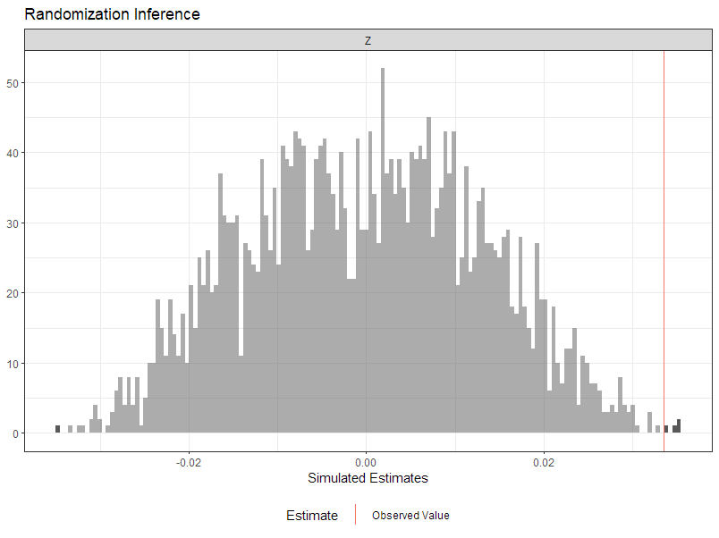
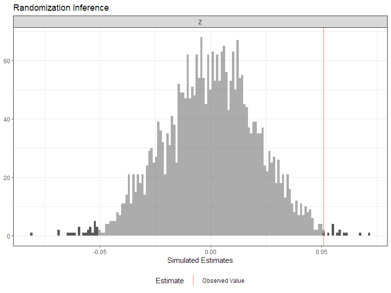

| Home | Resume (Old) | Econ Research | Interesting Reads | Old Books | Random |
|---|
Thesis: Fox News's Effect on Social and Moral Preferences. Winner of the D.K. Smith Prize in Economics for best thesis.
Abstract: This paper examines how Fox News influences social and moral preferences: two crucial inputs in people's decision-making process. I conduct a survey among Americans aged 45 or older and use the variation in the channel positions of Fox News and MSNBC across different towns and cable providers as instruments. After confirming that these channel positions do not predict voting patterns before Fox started broadcasting, I find evidence that Fox shifted moral values to be more communal, some suggestive evidence that it decreased altruism and trust, and that Fox does not appear to affect negative reciprocity. In addition, these treatment effects are concentrated among those who did not vote for Bill Clinton or Bob Dole in the 1996 election.
Theory: Axioms and Theorems in Voting Theory with a Brief Biography of Kenneth May.
I wrote this for the final paper of ECON 1080: Great Theorems of Economics taught by Professor Jerry Green. The class is about 2/3 microeconomic theory topics and 1/3 history of microeconomic theory. I also did a presentation on the subject and the slides can be found here.
Low Wage Gig Sector Increase Wages in Indivisible Labor Monopsony Labor Market
I wanted to add some data component to the paper to test my model in practice, but now I fear I might never have the time for it. The gist is that you can look at the professions where people are most likely to drive for a gig company, and then see if their wages increased proportional to the local market concentration (which people have measured using proprietary data here, although this article is supposed to have some market level measures available to the public). Then the specification uses data on uber/lyft entry. You could even run a triple differences by comparing those who had a 40 hour work week (i.e., probably not a lot of hours flexibility) with those who didn't.
Dobson, Emily, Carol Graham, Tim Hua, and Sergio Pinto. 2022. “Despair and Resilience in the US: Did the COVID Pandemic Worsen Mental Health Outcomes?” Working Paper 171. Brookings Global Working Paper Series. Brookings Institution. Brookings WP link
Hua, Tian., Kim, Chris Chankyo, Zhang, Zihan., & Lyford, Alex. 2021. "COVID-19 Tweets of Governors and Health Experts: Deaths, Masks, and the Economy"
Journal of Student Research 10 (1). https://doi.org/10.47611/jsr.v10i1.1171
PDF Dataset
Twitter Thread
Powerpoint Slide for spring Symposium
Preliminary update: I wrote this paper before I had taken econometrics, probability, or statistics. I wrote it before I really learned R. (Wild eh?) So the data analysis we conducted was somewhat limited. This is not necessarily a huge deal: we had a census of all tweets from the time period, so none of the findings are "wrong." However, in retrospect, there was a lot that I would have done differently. The biggest one among them being that I would have treated each individual user as a unit of observation, as opposed to pooling everything together by user category.
For now though, I present the following two randomization inference graphs on the rate at which Republican/Democrat governors mention death or masks in their COVID-19 related tweets. The graph on the left looks at the proportion of COVID-19 related tweets that contained words relating to death; the one on the right looks at the proportion of COVID-19 related tweets that contained the word "mask." We randomize the assignment of party labels. The p-values are 0.001667 and 0.013 respectively, suggesting that the difference between Democrat and Republican governors are, in one sense, statistically significant (i.e., Democrats mention deaths and masks more). For reference, a similar test with words relating to the economy yields a p-value of 0.883.

